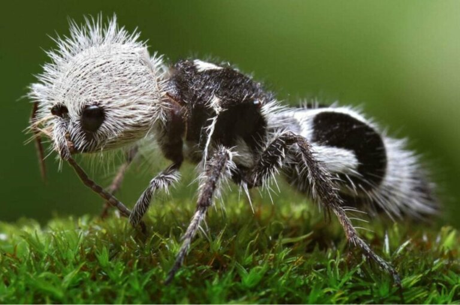

𝔽𝕆ℝ𝕄𝕀𝔾𝔸 ℙ𝔸ℕ𝔻𝔸
A formiga-panda é um oponente formidável, armado com mandíbulas poderosas e uma armadura magnífica, além disso, ela também
tem uma picada forte e uma boa dose de agilidade.

Conhecida como "formiga-panda" devido a sua aparência semelhante à pelagem dos pandas, esta
espécie, na verdade, é uma vespa sem asas. Euspinolia militaris pertence à família Multiliidae e é endêmica da costa
central do Chile. Pode alcançar até 8mm de comprimento e viver até 02 anos, uma alta expectativa de vida para este
tipo de inseto. Costumam ser nectívoras e pouco sociais. O dimorfismo sexual é evidente. Machos apresentam tamanho
maior e hábito noturno, enquanto fêmeas são menores e diurnas. Apesar de fofas, possuem uma mordida dolorosa e
irritante. Algumas espécies dessa família são conhecidas como "cow-killer", pois sua mordida é capaz de derrubar até
vacas adultas. Também chamadas de formigas-de-seda, a família Multiliidae vigora na lista de espécies quase
extintas.
A formiga panda (Euspinolia ornatula), conhecida internacionalmente como Panda Ant, é, na
verdade, uma vespa sem
asa. Pertencente a família Multilidae, a designação de “formiga” se espalhou pela semelhança com o pequeno
inseto. Embora a espécie tenha sido descoberta há cerca de 80 anos no Chile, ela foi relativamente pouco estudada.
Sabe-se que seus espécimes vivem cerca de dois anos e preferem colonizar áreas secas e arenosas. Assim, exemplares
da formiga-panda foram relatados no Chile, na Argentina, em partes do México e no sudoeste dos Estados Unidos.
✩